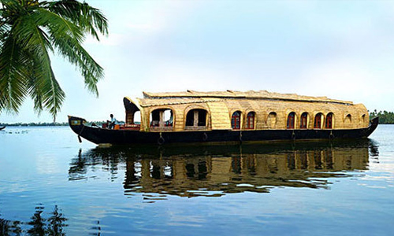

Allapuzha district

Places to visit in Alleppey: Kumarakom Bird Sanctuary, Vembanad Lake, Mannarasala Temple, Ambalapuzha Temple, St. Andrew's Forane Church, Pathiramanal, Pandavan Rock, Edathua Church, etc. There is a diversity among the many places to visit in Alleppey, from the rewarding sight of the sea to the wriggling inlets of backwaters and jungle streams- No wonder Alleppey was called the “Venice of the east” by Lord Curzon. The concept of houseboats which is locally called Kettuvallam in Malayalam is a primitive practice in Kerala.
Top places to visit in Allapuzha

Alleppey Beach

Alleppey Lighthouse

Edathua Church

Karumadi

Krishnapuram Palace

Kuttanad Backwaters


St. Andrew's Basilica Arthunkal

St. Andrew's Forane Church